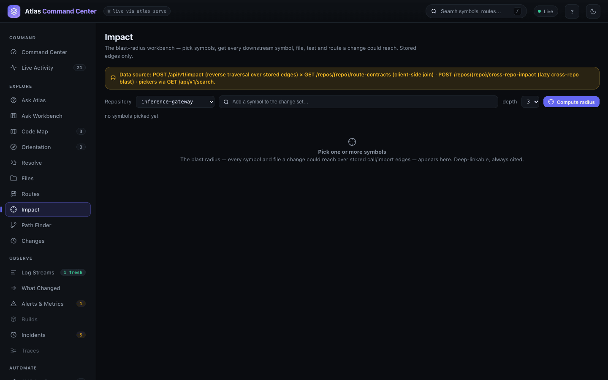
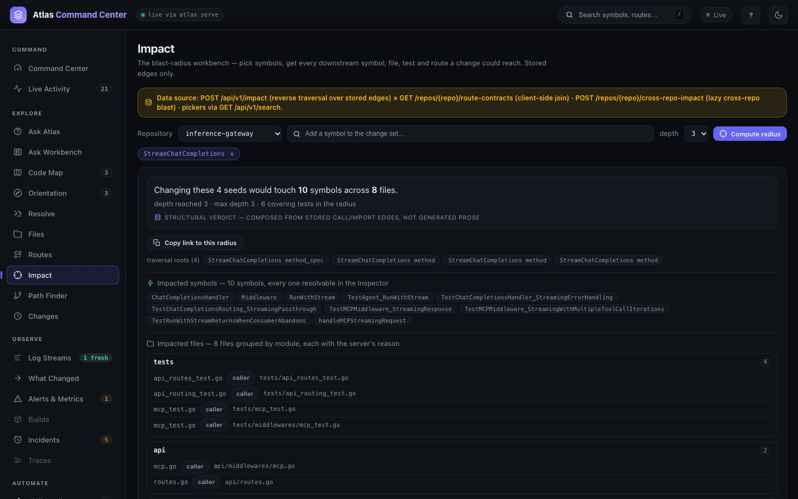
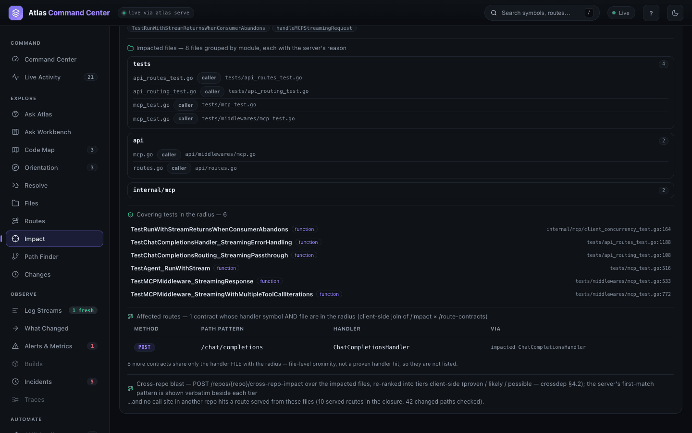
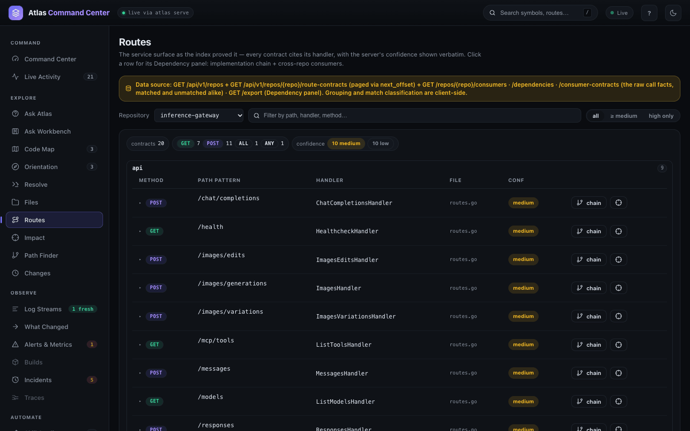
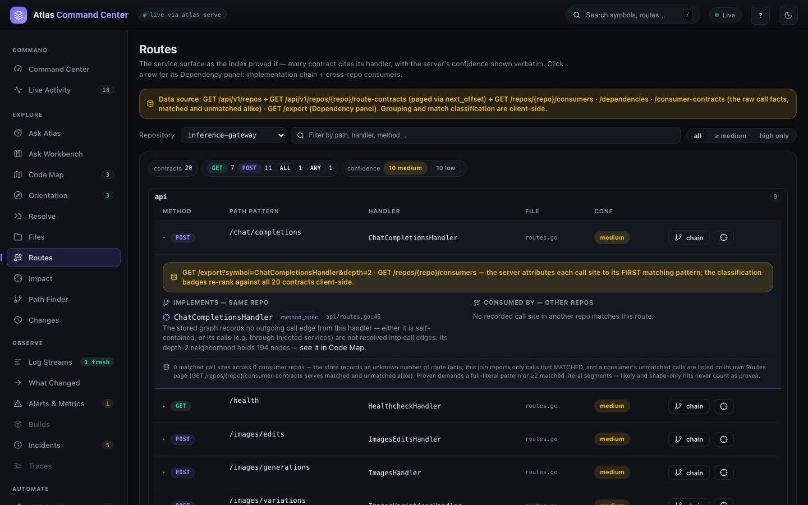
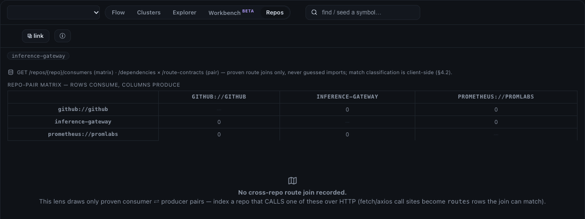

Impact and review
Impact answers the question you ask before you change something: what else does this reach? You name the symbols or files you are about to change; Atlas walks the stored call and import edges backwards to every symbol, file and test that could notice, and joins the result with the routes the repository serves and the repositories that call them. Reach for it before a refactor, while reviewing a pull request, or when you need to know which tests to run.
Open It
In the dashboard, choose Impact in the EXPLORE group (#/impact). The view opens on the first repository with nothing picked. Everything you pick is written into the address — #/impact?repo=<repo>&symbols=a,b&depth=3 — so a radius can be linked and reopened.

From a terminal, the same question is one command. Positional arguments are symbols; changed files go in --paths:
atlas impact StreamChatCompletions
atlas impact --paths api/context_window.goFind What a Change Reaches
- Choose the Repository.
- Type a name into Add a symbol to the change set…. The list offers only symbols the index holds, with their kind and
path:line; free text is never accepted as a symbol. - Pick one. The radius computes at once. Add more symbols (up to 12) to widen the change set; × on a chip removes it.
- depth (1 to 6, default 3) bounds how many reverse hops the walk takes. Compute radius runs it again.
One name, every definition. A name stands for every definition that carries it. In inference-gateway, StreamChatCompletions is an interface method, the provider's method and two test mocks, so the verdict starts from 4 seeds and lists all four under traversal roots.
Read the Radius

- The verdict — "Changing these 4 seeds would touch 10 symbols across 8 files", with the depth reached and the number of covering tests. It is labelled structural verdict: counted from stored edges, not written by a model. Copy link to this radius copies the address.
- Impacted symbols are chips; each opens the Symbol Inspector.
- Impacted files are grouped by module (here
tests4,api2,internal/mcp2), each with the reason the server gave —callerfor all eight. - Covering tests in the radius lists the tests that reach the change, with
path:line: the list to run before you merge. - Affected routes are the contracts whose handler symbol and file are both in the radius — here
POST /chat/completionsthroughChatCompletionsHandler. Contracts that only share a file are counted, not listed. - Cross-repo blast checks whether another indexed repository calls a route served from the impacted files. On this single-repository demo it reads "no call site in another repo hits a route served from these files (10 served routes in the closure, 42 changed paths checked)".

An empty radius is a finding, not an error: no stored edge reaches the seeds.
Read the Routes a Repository Serves
Choose Routes in the EXPLORE group (#/routes). It lists the HTTP contracts the index proved, each with its method, path pattern, handler, file and the server's CONF (confidence) verbatim. The filter box narrows by path, handler or method; all / ≥ medium / high only sets a confidence floor. Rows are grouped by the module of the handler's file.

Of the 20, eleven are registered by cmd/gateway/main.go (one of them, POST /metrics, is handled by a test mock) and nine by the example MCP servers under examples/. atlas stats reports 71 route rows for the snapshot: 32 are outbound HTTP calls the gateway makes, and the rest are the registrations this view folds into 20 contracts.
On a row:
- The handler name opens the Symbol Inspector.
- chain opens the Inspector with the handler's callers, references and neighbours loaded.
- The crosshair button opens Impact for that handler.
- A click anywhere else opens the Dependency panel under the row: IMPLEMENTS — SAME REPO (the handler's call chain from the stored graph) and CONSUMED BY — OTHER REPOS (call sites in other indexed repositories that match this route).

Find Who Calls a Route from Another Repository
Cross-repo answers join two repositories: the routes one serves and the HTTP calls another makes. Three commands ask it from either side:
atlas consumers— the other repositories that call a route this one serves.atlas dependencies— the producers and handlers that serve the calls this one makes.atlas cross-repo-impact --paths <files>— which other repositories call the routes served by the handlers in the changed files.
The demo service holds one code repository, so every join is empty. This is the real output, and the shape a populated answer fills:
atlas consumers --format plainconsumers inference-gateway impacted 0/0 repos 0/0
producer 52496750 indexed 2026-10-28T05:16:55Zatlas cross-repo-impact --paths api/routes.go{
"repo": "inference-gateway",
"served_routes": [
{ "method": "GET", "path_pattern": "/health",
"handler_file": "api/routes.go", "handler_symbol": "HealthcheckHandler",
"confidence": "medium", "registered_in": "cmd/gateway/main.go", "registered_line": 310 },
…
],
"impacted": [],
"consumer_repos": [],
"producer_commit": "524967508e9d90185c4a1c3540cac0dcda7c580a",
"closure_size": 13,
"effective_changed_paths": 14,
"total_served_routes": 10
}With a second repository indexed — a front end or another service whose code calls these paths — impacted lists each matched route with the calling file and symbol, and consumer_repos names the callers. The same joins feed the CONSUMED BY half of the Dependency panel, the cross-repo line of Impact, and the Repos lens of the Code Map, which draws a repo-pair matrix: rows consume, columns produce.

Gather Review Context for a Change
Three read-only commands prepare a review. atlas context builds a bounded bundle around changed paths — the changed symbols with excerpts, retrieval hits for an optional question, the impacted files and the edges between them — sized for a model's context window:
atlas context --format plain --paths providers/core/provider.go "how are streaming chat completions forwarded"context mode symbol_context files 13 symbols 32 edges 17 hits 4 impacted 0
files(13) providers/core/provider.go, internal/guardrails/guardrails.go, logger/logger.go, …
symbols(29) HTTPError, StatusCode, Message, Error, ProviderImpl, ID, Name, URL, Token, …atlas receipt compares a git base with HEAD against the local snapshot and prints what the diff touches. It never indexes or writes anything:
atlas receipt --base HEAD~3Atlas pre-submit receipt
changed paths: 4
changed symbols:
VERSION — callers ambiguous (config/meta.go:5)
TracesEndpointURL — callers 2 (otel/otel.go:86)
Init — callers ambiguous (otel/otel.go:104)
TestTracingTracesEndpointURL — callers 0 (tests/tracing_test.go:312)
caller note: ambiguous means multiple same-named definitions; count withheld
served routes touched: 10
consumer repos: 0
local snapshot e842033e · commit 52496750 · NOT the server's snapshotatlas coverage lists the tests that reach a symbol. Without an imported coverage profile it answers from the call graph (mode static); atlas coverage import loads a Go coverprofile or LCOV file for real line coverage:
atlas coverage --format plain StreamChatCompletionscoverage StreamChatCompletions mode static covered true dir tests_for_symbol
tests(20) TestRunWithStreamReturnsWhenConsumerAbandons, TestChatCompletionsHandler_StreamingErrorHandling, TestChatCompletionsRouting_StreamingPassthrough, TestAgent_RunWithStream, …From the CLI
atlas impact StreamChatCompletions --format plainimpact symbols 10 files 8 tests 6 depth 3
symbols(10) ChatCompletionsHandler, Middleware, RunWithStream, TestAgent_RunWithStream, …
files(8) api/middlewares/mcp.go, api/routes.go, internal/mcp/agent.go, internal/mcp/client_concurrency_test.go, …
tests(6) TestRunWithStreamReturnsWhenConsumerAbandons, TestChatCompletionsHandler_StreamingErrorHandling, …atlas route-contracts --format plainroute_contracts inference-gateway total 20
ALL /mcp confidence low source route_table
ANY /metrics Handler confidence low source route_table
GET / confidence low source route_table
GET /capabilities func confidence low source route_table
GET /health HealthcheckHandler confidence medium source route_table
…--max-depth bounds the walk (default 3) and --tests=false leaves out covering tests. The CLI reference lists every flag.
From the API and MCP
The views read these routes on the running service (Dashboard and API):
| Route | Answers |
|---|---|
POST /api/v1/impact | The radius: {"symbols": […], "repo_id": "…", "max_depth": 3} |
GET /api/v1/repos/{repo}/route-contracts | The routes a repository serves, paged with next_offset |
GET /api/v1/repos/{repo}/consumers · /dependencies | Cross-repo callers and producers |
GET /api/v1/repos/{repo}/consumer-contracts | Every outbound call the repository makes, matched or not |
POST /api/v1/repos/{repo}/cross-repo-impact | Cross-repo blast for {"changed_paths": […]} |
An assistant asks the same questions over MCP through the impact tool (with scope=cross_repo for the cross-repo radius), routes and context. See MCP tools.
Related
- Code Map and graph — walk the callers and callees a radius is made of.
- Change lens and history — what an indexing pass changed, and how history grows.
- Ask Workbench — ask about a change in plain language, with citations.
- MCP tools — the same answers for an AI assistant.